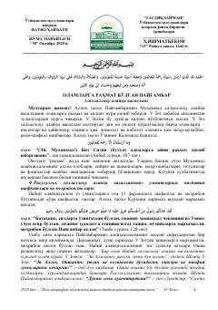

ORPayg'ambarimiz Muhammad (s.a.v.) ning yuksak axloqlari va ummatga bo'lgan mehribonliklari haqida.
Ushbu kitob Payg'ambarimiz Muhammad (s.a.v.) ning o'z ummatiga bo'lgan cheksiz mehr-shafqatlari, yuksak axloq-odoblari va insoniyatga bo'lgan murabbiyliklari haqida hikoya qiladi. Asar Qur'on oyatlari va hadisi shariflar asosida yozilgan bo'lib, musulmonlar uchun ibratli saboqlarni o'z ichiga oladi.